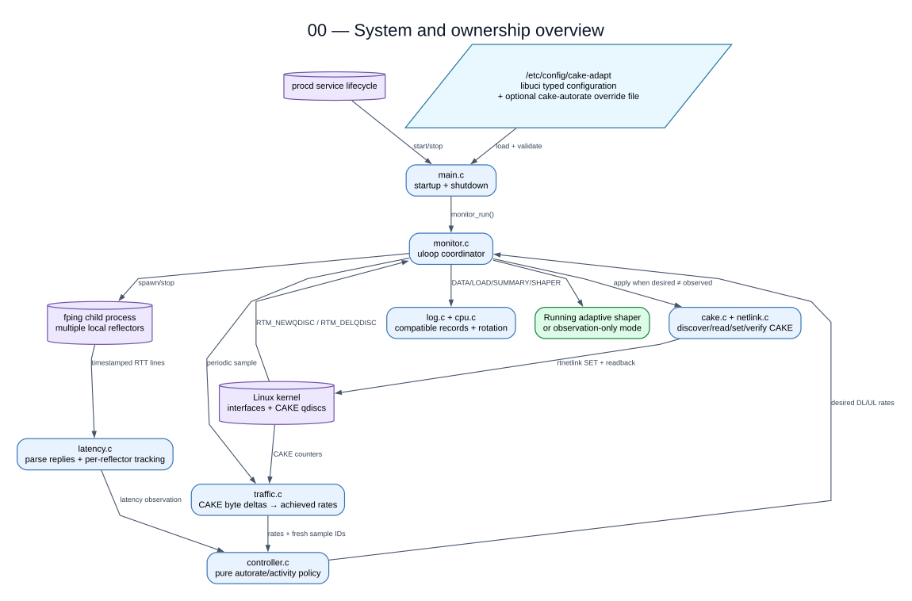

00 — System and ownership overview
files/cake-adapt.init:1 src/main.c:1 src/monitor.c:1 src/config.c:1 src/traffic.c:1 src/latency.c:1 src/controller.c:1 src/cake.c:1 src/netlink.c:1 src/log.c:1
Important behavior and caveats
- The daemon adapts CAKE instances that already exist. SQM still creates WAN/IFB, ingress redirect, and qdiscs.
- The policy boundary is measurement → controller decision → desired CAKE state → verified kernel update.
- Upload is the configured interface; download is derived as ifb4
. - fping is the only supported pinger. Configuration comes from typed UCI, optionally followed by safely parsed cake-autorate overrides.